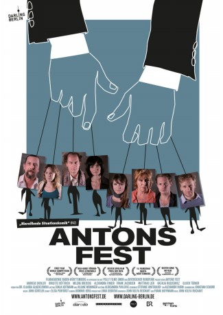

IMDB-Wertung: 6.0 / 10
IMDB-Wertung: 6.0 / 10  Metascore:
Metascore: 
Eine zerrüttete Familie kommt über ein Wochenende in einem abgelegenen Hause zusammen, während sie auf den verschollenen Anton warten, der sie alle eingeladen hat.
 IMDB-Wertung: 6.0 / 10 Metascore:
Eine zerrüttete Familie kommt über ein Wochenende in einem abgelegenen Hause zusammen, während sie auf den verschollenen Anton warten, der sie alle eingeladen hat.
Jahr: 2013
Dauer: 92 Minuten
FSK:
Land: Deutschland Studio: UCM.ONETonspuren: - , - ,
Untertitel: Englisch,
Auflösung: 1080p (1920x1080) Größe: 6758 MB
Genre:
Regisseur: John Kolya Reichart
Drehbuch: Frank Hoffmann, John Kolya Reichart
Soundtrack:
Darsteller:
 Milena Dreißig als Jule
Milena Dreißig als JuleDatei: X:\2013(A-F)\Antons Fest (2013, FSK, 1920x1080).mkv seit 22.07.2019
Festplatte: HD 2012(N-Z)-2013(A-H)
 Es gibt insgesamt 127 Filme in der Gruppe '2013(A-F)'
Es gibt insgesamt 127 Filme in der Gruppe '2013(A-F)'